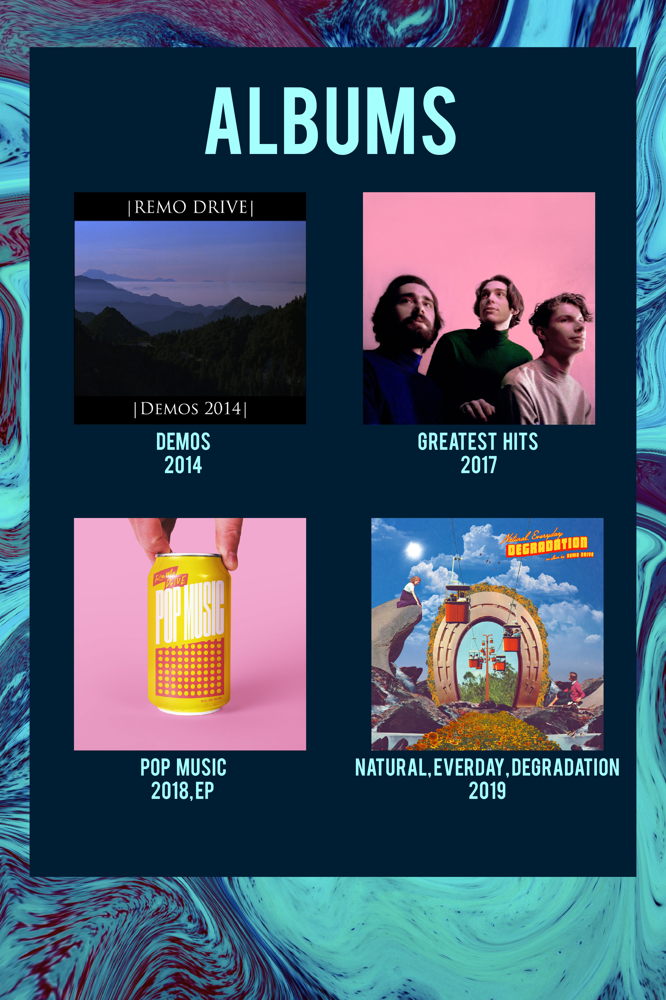

Remo Drive is a Minnesota alternative/emo band. They pay homage to the midwestern emo sound while incorporating sardonic humor, a Police-inspired retro aesthetic, and mathy guitar through their high energy sets. Remo Drive’s passion, authenticity, and vibrancy for life cast new light on the otherwise familiar sound.
The current lineup consists of Erik Paulson (vocals, guitar) and Stephen Paulson (bass).
Previous drummers include Sam Mathys and Austin Voigt.

Since releasing their debut album‚ Greatest Hits‚ in 2017 (later re-released in 2018 by Epitaph Records)‚ brothers Erik and Stephen Paulson have been pegged as one of the most captivating acts in the new–era indie rock scene‚ mixing the musicality of bands like Weezer‚ Title Fight, and The Police with the idiosyncratic lyrical tendencies of the genre’s more modern movement.
Greatest Hits, along with 2018’s Pop Music EP‚ took the band around the world with the likes of Saves The Day and Hippo Campus. All that time spent on toll roads and tarmacs left the brothers endless opportunities to think about how far their band had come in a short time ,as well as plan for the future.
“I spent a lot of time asking questions and looking inward,” Erik says. “It taught me a lot about who I was and who we wanted to be as a band.”
Perhaps most importantly, this time to reflect showed Remo Drive what they didn’t want to do on their follow–up. While Greatest Hits overflowed with wide-eyed nativity and whole–hearted enthusiasm‚ Natural‚ Everyday Degradation (out now on Epitaph) finds the Paulson brothers crafting a sturdier brand of indie–rock.
Produced by Joe Reinhart (Modern Baseball‚ Hop Along) and mixed by Peter Katis (The National‚ Interpol)‚ Natural, Everyday Degradation doesn’t burn the Remo Drive playbook – it calibrates it to highlight the band’s true strengths. So Erik’s lyrics are still just as emotionally resonant and universally relatable as they were on Greatest Hits; here, though, they’re far more intentional and precise. Instead of letting off–kilter turns of phrase and nervous energy capture listeners’ ears, Remo Drive allow their confidence to take center stage.
“Our first record was so much fun because it felt like we were breaking out of a box, mostly our local music scene,” Erik says. “But almost as soon as we did that, we started feeling constrained by where we found ourselves. We wanted to keep thinking outside the box and finding our own unique voice.”
Instead of digging back into their more obvious influences for LP2, the band (solely the Paulsons for the first time ever) spent time exploring albums from the likes of The Killers‚ Arcade Fire‚ and Bruce Springsteen – timeless artists who do more than just write songs: They tell stories, and this new way of approaching Remo Drive immediately made a mark on the songs the duo wrote.
“If Brandon Flowers actually did the things he wrote about on the first Killers album, he’d be in prison‚” Erik laughs. “You don’t have to always write about yourself. You can tap into your emotions and use them to tell stories instead.”
So while the first–person pronouns can’t always be traced back to the band directly this time‚ Natural‚ Everyday Degradation still deftly encapsulates the growing pains unrelegated to a specific generation‚ musing on topics like self-identify‚ mental health‚ and a burning desire to prove doubters wrong.
“None of the songs are that wild‚” Erik demures, noting the album’s title was in part inspired by Salvador Dalí’s iconic painting “The Persistence of Memory.” Perhaps that’s true, but while Remo Drive circa Greatest Hits found the band looking longingly beyond their suburban Minnesota hometown‚ Natural, Everyday Degradation is them on the other side‚ soundtracking the long drives and relentless touring with life’s bigger questions.
“There’s sadness in routine,” Erik says, referencing the song ”Around The Sun,” an ode to touring. ”Even in the happiest of situations‚ we’re losing valuable moments or time. All these songs are about some sort of warped existence, but through that, I think we ultimately find we can be whatever we want to be.”

